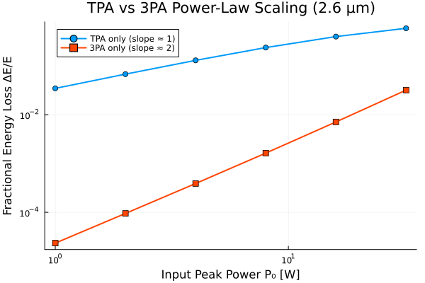

Example 11: Three-Photon Absorption (3PA) — Mid-Infrared Silicon
This example isolates Three-Photon Absorption (3PA) — the nonlinear-loss channel that takes over from TPA once the photon energy drops below half the silicon bandgap ($\hbar\omega_0 < E_g/2$), roughly beyond $\lambda \gtrsim 2.2\,\mu\text{m}$. Rather than a single propagation run, we sweep input power through two independent media — TPA-only and 3PA-only — and measure their fractional energy loss, exposing the qualitatively different power scaling that distinguishes the two processes.
🔬 Physics
The two absorption channels obey different intensity power laws:
\[\left.\frac{dI}{dz}\right|_{\text{TPA}} = -\alpha_2 I^2 \qquad\qquad \left.\frac{dI}{dz}\right|_{\text{3PA}} = -\alpha_3 I^3\]
In the weak-depletion limit ($\alpha_n I_0^{n-1} L \ll 1$), the fractional energy loss over a fixed length $L$ scales as:
\[\frac{\Delta E}{E}\bigg|_{\text{TPA}} \propto P_0 \qquad\qquad \frac{\Delta E}{E}\bigg|_{\text{3PA}} \propto P_0^2\]
i.e. on a log-log plot of fractional loss vs. input power, TPA gives a slope of 1 while 3PA gives a slope of 2 — a clean, directly measurable experimental signature (see Opt. Express 21, 32192 (2013); Appl. Opt. 59, 1187 (2020) for the underlying mid-IR silicon/SiGe measurements).
💻 Julia Code
using Soliton
grid = create_grid(2^12, 40e-12, 2600e-9) # 2.6 μm mid-IR pump, below Si's TPA edge
soi_tpa = SemiconductorMedium(
length=0.005, gamma=50.0, alpha2=5.0e-12, Aeff=0.5e-12,
tau_c=1.0e-9, betas=[-500e-27], lambda0=2600e-9,
)
soi_3pa = SemiconductorMedium(
length=0.005, gamma=50.0, alpha2=0.0, alpha3=2.0e-27, # ~2e-3 cm^3/GW^2, Opt. Express 21, 32192 (2013)
Aeff=0.5e-12, tau_c=1.0e-9, betas=[-500e-27], lambda0=2600e-9,
)
powers = [1.0, 2.0, 4.0, 8.0, 16.0, 32.0] # W
function fractional_loss(medium)
losses = Float64[]
for P0 in powers
pulse = gaussian_pulse(grid, P0, 2.0e-12)
sol = solve(pulse, SimParams(; medium=medium, raman_model=nothing, z_saves=2); progress=false)
Ein = pulse_energy(pulse)
Eout = pulse_energy(Pulse(sol))
push!(losses, (Ein - Eout) / Ein)
end
return losses
end
loss_tpa = fractional_loss(soi_tpa)
loss_3pa = fractional_loss(soi_3pa)
# Log-log slope between the first and last sweep points
slope(y) = (log(y[end]) - log(y[1])) / (log(powers[end]) - log(powers[1]))
println("TPA-only log-log slope: ", round(slope(loss_tpa), digits=2), " (expect ≈1)")
println("3PA-only log-log slope: ", round(slope(loss_3pa), digits=2), " (expect ≈2)")TPA-only log-log slope: 0.82 (expect ≈1)
3PA-only log-log slope: 2.08 (expect ≈2)
📊 Expected Results
| $P_0$ [W] | TPA loss | 3PA loss |
|---|---|---|
| 1 | ~3% | ~2×10⁻⁵ |
| 8 | ~24% | ~1.6×10⁻³ |
| 32 | ~59% | ~3.2×10⁻² |
The fitted log-log slopes come out close to 1 (TPA) and 2 (3PA), confirming the quadratic-vs-cubic intensity dependence directly in the propagation model — the defining experimental fingerprint used to identify 3PA in mid-IR silicon photonics.
Below the TPA edge ($\hbar\omega_0 < E_g/2$), two-photon transitions are forbidden by energy conservation, and silicon looks nominally lossless to first order — until 3PA (still allowed for $\hbar\omega_0 > E_g/3$) sets the real nonlinear-loss floor. This is why mid-IR silicon supercontinuum and parametric devices must include alpha3, not alpha2, to correctly predict conversion efficiency (see e.g. Appl. Opt. 59, 1187 (2020) for SiGe four-wave mixing).
References
"Multi-photon absorption and third-order nonlinearity in silicon at mid-infrared wavelengths," Opt. Express 21, 32192 (2013). DOI: 10.1364/OE.21.032192
"Impact of third-order dispersion and three-photon absorption on mid-infrared time magnification via four-wave mixing in Si₀.₈Ge₀.₂ waveguides," Appl. Opt. 59, 1187 (2020). DOI: 10.1364/AO.383906
Q. Lin, O. J. Painter, and G. P. Agrawal, "Nonlinear optical phenomena in silicon waveguides," Opt. Express 15, 16604–16644 (2007). DOI: 10.1364/OE.15.016604